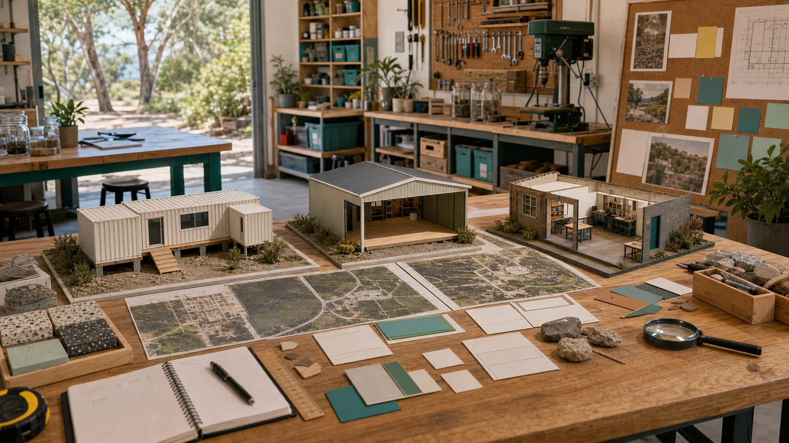

Useful before impressive
Repairs, reuse shelves, material tests, school visits, workbench nights and safe tool inductions can make the space valuable before any larger funding story lands.
A public access, light-industrial maker-space could give Dunwich / Goompi a practical base for repair, recycling, serious fabrication, community learning, local media and material experiments.

A maker-space is easier for the public to understand than a full industrial transformation plan. People can walk in, see tools, learn a safe process, fix something real, and leave with a useful result.
What if the first proof of resilience was not a grand announcement, but a steady stream of small wins that locals could touch?
Repairs, reuse shelves, material tests, school visits, workbench nights and safe tool inductions can make the space valuable before any larger funding story lands.
The public layer can invite curiosity while keeping cultural authority, safety, property, engineering and environmental decisions with the people and regulators who hold them.
The first building decision is really a capability decision. The right answer might be an existing room, a lockable container shed on raised footings, a purpose-built workshop, or a staged mix that changes as the project proves itself.
Fastest proof, lower setup cost and easier public visibility if the lease, storage, noise, dust, power, access and after-hours security work.
Lockable, modular, ferry-friendly and expandable. Raised footings, power, water, extraction, shade, drainage, approvals and safe access decide whether it works.
Best long-term workflow for lasers, CNC, 3D printer banks, clean work, dirty work, training and storage, but it asks for a stronger funding and planning pathway.
Can tools, materials, screens and prototypes be locked down properly when the room is closed?
Can the site support serious power, ventilation, extraction, water, fire safety, waste handling and internet without constant workarounds?
Can residents, young people, mentors, trades, deliveries and public transport reach it without creating unsafe roadside or traffic problems?
Does the location suit noise, dust, deliveries, parking, school groups, evening sessions and the occasional ambitious build day?
How close is it to the waste centre, batch plant, trades, schools, ferry, gardens, noticeboards and other practical partner sites?
Can one good room grow into a container cluster, sister sites, training bays, clean-energy tests and future island-engineered systems?
The site does not need to begin as one massive shed. It could begin as a set of clearly named zones that help visitors understand what is safe, what is experimental, and what needs training.
A calm bench for electronics, hand tools, induction cards, repair guides, laptops, small parts and patient first-timers.
A tougher area for sanding, cutting, clamping, timber, metal, reclaimed materials and tidy rough work.
Local sand, reclaimed glass, shell-safe education material, timber offcuts, recycled plastics and careful mineral literacy samples.
A visible place where broken objects wait for triage: fix now, teach with it, strip for parts, recycle properly, or decline safely.
A small media and noticeboard point where workshop events, skills requests, safety notes and local opportunities can be published.
A small compute, sensor and documentation area for digital twins, local records, noticeboards, training videos and experiment logs.
A simple place to create Markdown notes for tools people can share, skills they want to learn, objects to repair and experiments to try.
A public maker-space works best when it offers several practical entrances rather than one expert-only door.
What everyday objects could be repaired locally before they become a ferry trip or landfill problem?
What tiny skill rotations could build confidence across tools, safety, media, logistics and paid local service?
Which jigs, signs, shelves, prototypes, parts and repair routines could save time without needing a full factory?
What notices, event gear, reusable stall parts, donation repairs and grant evidence could be made clearer?
A small public record could track repaired items, shared tools, learning sessions, waste diverted, local materials tested, partner notes, photos, safety lessons and next questions.
Grants are easier to read when they can point to real local activity. The maker-space could start with simple evidence: who benefits, what was repaired, what was learned, what stayed out of landfill, what tools were shared, and which partners are ready for the next step.
What small proof would help a funder see the project as practical community infrastructure, not just a good idea waiting for permission?